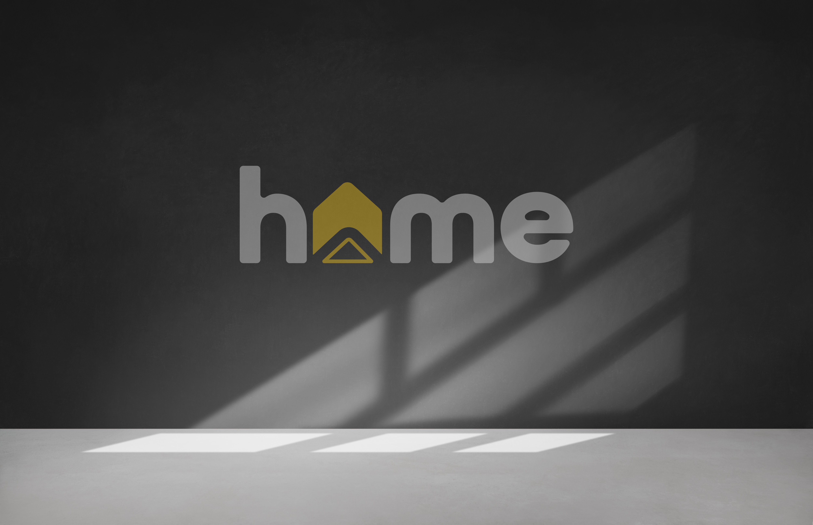
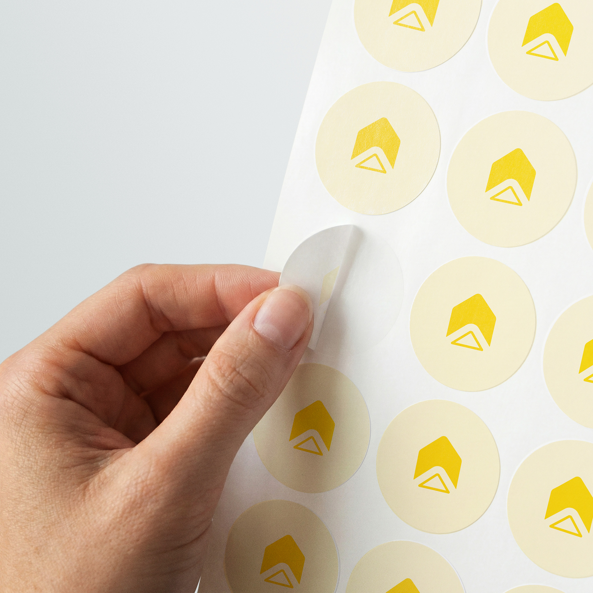
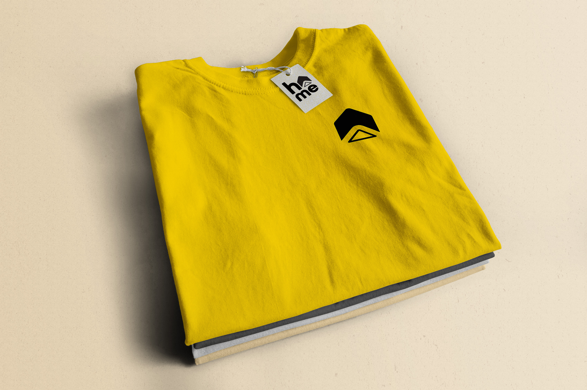

The goal? To communicate a brand that is like a "home away from home" for those who cannot find community and belonging in church.
Visually, we need to communicate:




Without being too cliché, I tried to think of how to incorporate the simple symbol of a home into this branding.
For this specific brand, I really like how arrows are symbolic of upward movement, lifting, and positivity. This is what this brand is all about.
I found a way to include an arrow in a "Home" icon. I chose yellow because at it's core, yellow is joyous, happy, and cheerful.
All Round Gothic is a fairly common font for the letters of "Home" but it's readable, rounded, and modern to compliment the new icon.